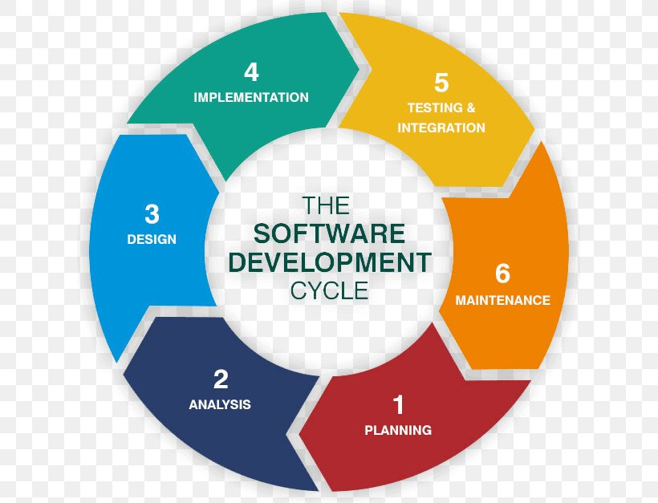

Website Development Cycle

The Website Development Cycle is the process which is used to create working websites. This process's steps change depending on who you ask and which sources you use, but these are the main steps. You gather information through research, plan a strategy for making the website, assemble the writing and pictures used, and then you design the website's visuals. Then, you develop the website with links and such, test it to assure that the website is functioning, and finally launch it. The last step is maintenance, which just assures that the website will continue to work as things progress.